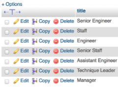
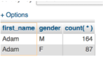
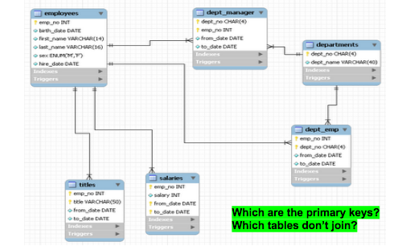
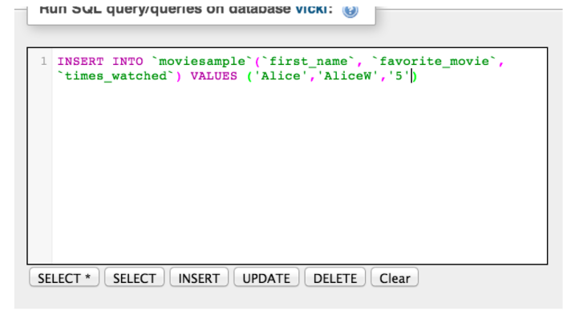

Intro To SQL
Welcome!
Girl Develop It is here to provide affordable and accessible programs to learn software through mentorship and hands-on instruction.
Some rules
- We are here for you!
- Every question is important
- Help each other
- Have fun
Tell Us About Yourself
- Who are you?
- What's your experience level with SQL?
- What do you hope to get out of the class?
- What is your favorite movie, and how many times have you watched it?
We're going to make a table out of this info in part 2, and the data will live here: http://bit.ly/SQLTable
About Me
- Data scientist
- 9+ years of experience with SQL
- Favorite movie is Beauty and the Beast, watched 25 times. (and that was just yesterday)

What to expect from the class
- This is a complement to the database design class
- We'll be using the same terminology and building on those concepts
- But we'll be hands-on

By the end of the class, you will be able to query and modify a SQL table to make sense of the data you have in a relational way.
Plan for the day: CRUD
Morning (10-12): cRud
What's a database? What's SQL?
- How to query a database:
- Select statement (from statement)
- Select, Distinct
- Count
- Group By, Order By
- Clauses
- Where
- Like
- Joins(Inner/Outer Left/Right)
- Practice
Afternoon(12:30 - 3): CrUD
- Super-awesome bonus round:
- Subqueries
- Practice
- How to modify a database
- Creating a table
- Udating a table with rows
- Deleting Rows
- v.s. deleting tables
- Optomizing queries
- Resoures and links
- Practice
- GDI Survey
What's a relational database?
A virtual organized file cabinet that makes data available to people and computers across the organization.

The language of relational databases
- Database: A group of data organized in a logical way(Excel workbook)
- Schema: Layout of the database, sometimes interchangeable with database (Excel workbook + name of workbook)
- Table: A subset of a database (Excel worksheet)
- Rows (records) and columns (fields): Parts of a table
- CRUD (Create, Read, Update, Delete): How you change the databases and tables in the database
- Relational Data Model : Data related to each other are stored a certain way and “point” to each other (Like Excel cell references)
- Database keys (primary and foreign): The pointers in each table that can link to other tables
- Indexes: Make databases easier to search
- RDBMS systems: Types of relational databases that have all the properties of relational data models: MySQL, Oracle, Access, Postgres
- Queries: How to ask questions of the tables and databases
Databases, schemas, and tables
DB Schema→ Table → Row → Value

Excel File → Workbook → Row → Cell
What's a relational database?
Excel spreadsheets you can join without Vlookups!
What's SQL?
- SELECT user_name, sum(total_purchases)
- FROM billing_database.user_table
- WHERE user_name like 'Henderson%'
- AND billing_month = 'January'
- GROUP BY user_name;
- It's the language that the database speaks to bring you back data
- Has a lot of words similar to English, but they have their own meaning as key words
- Like Siri or Alexa
Different Flavors of SQL
- How do you say that you want a can of Coca-Cola?
- Coke, soda or pop?
- How do you write SQL?
| Oracle | MySQL |
| SQL Server | Postgres |
| Access | Sybase |
| DB2 |
All different flavors of the same language
Databases, schemas, and tables

- Reading tables other people wrote
- Modifying those tables to add your own information/ creating your own tables to read from CSV files, other SQL tables, and other systems.
Databases and CRUD
- Create INSERT, CREATE
- Adding rows to your table
- Read SELECT
- Picking specific information from your table
- Update UPDATE, ALTER
- Picking specific information from your table
- Delete DELETE, DROP, TRUNCATE
- Erase your data
What can you do with SQL?
The power is in the relationship between data sets.
- How many customers do we have in Los Angeles?
- What's that person’s Facebook and Twitter handle?
- Did profits go up or down this quarter?
- How many users are clicking on our new site?
Three parts of SQL
SQL clauses: required order
| 1 SELECT | selects variables |
| 2 FROM | opens datasets |
| 3 WHERE | restricts observations |
| 4 GROUP BY | groups observations |
| 5 HAVING | restricts groups |
| 6 ORDER BY | sorts results |
Let's develop it!
Let's get started reading tables
We'll use MySQL, a popular version of SQL.
If you've done anything online, chances are the transation went through MySQL (Walmart, Kayak, Facebook, Etsy, Verizon)
We'll log on to the front-end of MySQL, PHPMYAdmin.
Logon site: http://bit.ly/GdiSQL
Your Password: http://bit.ly/GDIPHPLogin
You should see a login screen:

How PHPMyAdmin Works

Two ways to execute in MySQL: PHPMyAdmin and command line

Focusing on phpMyAdmin for the first half of the class.
We have a test dataset of employee records we'll be using in the employee schema.

Employee data:
6 tables in the employees schema

Data Source
Tables and Schemas
employees is the database and it has 6 tables.
Database/schema used interchangeably
Database → Schema ---> Table
Book ---> Chapter ---> Page
MySQL Database → Employees Schema → employees Table

How to name schemas and tables
- Schema/Databse: employees
- Tables:
- employees.employees,
- employees.departments,
- employees.salaries
- And so on.
Usually it’s bad practice to name tables the same thing as the schema (confusing), but we’ll be ok with the small test data set.
Let's develop it!
Let's run our first query!
Go to the SQL tab and type in:
select * from employees.employees;

Type out all the SQL you write. It’ll be easier to learn.
Select * from different tables
Try a couple of these:
select * from employees.titles;
select * from employees.dept_emp;
select * from employees.salaries;
and check out the tables and info.
Selecting specific columns
Now let's try selecting only certain columns
select title, emp_no from titles;
Now let's profile the data: (find out what we have)
Distinct: selecting only unique instatnces of that column.
Difference between distinct and *
Distinct: Selecting only unique instances
- select count(distinct title) from employees.titles;
- 7
- select count(title) from employees.titles;
- 443,308
Difference between distinct and *
Distinct: Selecting only unique instances
- select count(*) from employees.titles;
- 433,308
- select count(*) from employees.salaries;
- 2,844,047
Which result set is bigger?
What is each one telling us?
Which table is the largest?
The largest table has the most records. Which table is the largest in our database?
- select count(*) from employees.departments;
- 9
- select count(*) from employees.dept_emp;
- 331,603
- select count(*) from employees.dept_manager;
- 24
- select count(*) from employees.employees;
- 300,024
- select count (*) from employees.salaries;
- 2,844,047
- select count (*) from employees.titles;
- 443,308
Three parts of SQL
SQL clauses: required order
| PROC SQL; | starts procedure |
| 1 SELECT | selects variables |
| 2 FROM | opens datasets |
| 3 WHERE | restricts observations |
| 4 GROUP BY | groups observations |
| 5 HAVING | restricts groups |
| 6 ORDER BY | sorts results |
| QUIT; | ends procedure |
From: http://blogs.sas.com/
Now let's get fancy with group statements
Group statements corral data together into categories when we want to count things by groups of things
i.e. How many total dogs vs puppies vs parents.

- SELECT type_of_dog,count(*);
- FROM animals.total_dogs;
- GROUP BY type_of_dog;
Counting Titles and Salaries
- select title, count(*) from
- employees.titles
- group by title;

What is this telling us?
How many instances of that title are there in the table?
More group by examples
- select dept_name, count(*) from departments
- group by dept_name;

How many instances of that department are there in that table?
Group by more than one item

Let's try some exercises that combine count (*), distinct and group by
How many unique salaries does each employee have? (that is how many times have they been given raises?)
- select emp_no, count(distinct salary)
- from salaries
- group by emp_no;
How many managers has each department had?
- select dept_no, count(emp_no) from dept_manager
- group by dept_no;
How many people that were born on the same day, have the same first name, and same gender are there that work for this company?
- select birth_date,first_name,gender, count(*) from
- employees group by birth_date, first_name, gender;
Another kind of group by: maximum and minimum
When was your youngest employee born?
- select max(birth_date) from employees;
- In this case, you don’t need the group-by statement since you’re not counting groups of people, but looking at the whole table
When was your youngest male employee born?
- select gender, min(birth_date)
- from employees
- group by gender;
Order by: Sorts by terms you want
- SELECT first_name, gender, count( * )
- from employees
- GROUP BY first_name, gender
- order by first_name;
Will sort by first name ascending, unless you specify desc.
- SELECT first_name, gender, count( * )
- from employees
- GROUP BY first_name, gender
- order by first_name desc;
Ordering by more than one column, will sort by the first, then by the second, ascending
- sselect gender, birth_date from employees
- order by gender, birth_date;
Order by count(*) of your table
- SELECT first_name, gender, count( * )
- from employees
- GROUP BY first_name, gender
- ORDER BY COUNT( * ) DESC
Order by exercises
Order by a number ascending
- select emp_no, salary from salaries
- order by salary asc;
Order by a number descending
- select emp_no, salary from salaries
- order by emp_no desc;
Three parts of SQL
SQL clauses: required order
| PROC SQL; | starts procedure |
| 1 SELECT | selects variables |
| 2 FROM | opens datasets |
| 3 WHERE | restricts observations |
| 4 GROUP BY | groups observations |
| 5 HAVING | restricts groups |
| 6 ORDER BY | sorts results |
| QUIT; | ends procedure |
From: http://blogs.sas.com/
Where Clause: Like a Filter
You only want to select certain things. (Excel filters)
- SELECT first_name, gender, count(*)
- FROM employees
- where first_name=’Adam’
- GROUP BY first_name, gender;

Really useful with 'like' statements
“Like” will pick up anything similar to what you entered.
- SELECT last_name, count( * )
- FROM employees
- WHERE last_name LIKE "S%"
- GROUP BY last_name;
- Exercises:
- What happens when you search in all caps?
- What happens when you do last_name = “S%”
- What’s the difference between like and =?
- Like is more like a search engine
- = means you have to have an exact match
Where clause exercises
Only all the females
- select * from employees
- where gender=’F’;
- *What happens if you don't include the quotation marks?
Only all of the engineers
- SELECT * FROM titles
- WHERE title LIKE '%Engineer%';
A couple of things to note about greater/less than/equal to
- where number >='5';
- brings back (5,6,7,8...)
- where number > '5';
- brings back (6,7,8...)
- where day <= ‘1-jan-2017’
- brings back: (Jan 1, Dec. 31, Dec. 30…)
- where day < ‘1-jan-2017’
- brings back: (Dec. 31, Dec. 30…)
- where != ‘1-Jan-2017’
- brings back anything other than Jan 1
Cooking with the good suff: joins
One table is great. But the power of SQL comes from being able to join related tables to get information.

Plan for the day: CRUD
Morning (10-12): cRud
- What's a database? What's SQL?
- How to query a database:
- Select statement (from statement)
- Select, Distinct
- Count
- Group By, Order By
- Clauses
- Where
- Like
- Joins(Inner/Outer Left/Right)
- Practice
Afternoon (12:30ish - 3): CrUD
- Super-awesome bonus round:
- Subqueries
- Practice
- How to modify a database
- Creating a table
- Udating a table with rows
- Deleting Rows
- v.s. deleting tables
- Optomizing queries
- Resoures and links
- Practice
- GDI Survey
Let's connect multiple tables
emp_no is the column that’s the primary key for all three tables that allows us to join them

- We join by primary keys: A field (or set of fields) that uniquely determine a row.
- Values in PK must be unique in table (no duplicates allowed); Only one PK per table allowed
- To foreign keys: A field (or set of fields) that is a PK in some other table.
How all the tables join in our schema
In SQL, a join looks like this:

Often when we join tables, we make them easier to reference later on by aliasing them, but at this point it’s a style choice.
You can now select columns that, before, only existed in either table
Find out salary history:
- SELECT first_name, last_name, hire_date,
- salary, from_date, to_date
- FROM employees a
- JOIN salaries b ON a.emp_no = b.emp_no
Another join example
When you have two columns from different tables with the same name, you have to reference them specifically.

Different types of joins
 https://dsin.files.wordpress.com/2013/03/sqljoins_cheatsheet.png
https://dsin.files.wordpress.com/2013/03/sqljoins_cheatsheet.png
Let's develop it!
Left join example
Left join: All the fields in the first table, plus the ones that match in the second table
- SELECT first_name, last_name, hire_date,
- title, c.from_date, c.to_date
- FROM employees a
- left JOIN titles c ON a.emp_no = c.emp_no;
What if you’d done a right join instead?
Going all in:
What is this query telling us?
- SELECT first_name, last_name,a.emp_no, hire_date, count(
- DISTINCT title) , count(DISTINCT salary)
- FROM employees a
- JOIN salaries b ON a.emp_no = b.emp_no
- JOIN titles c ON a.emp_no = c.emp_no
- where first_name like ‘A%’
- GROUP BY first_name, last_name, hire_date,a.emp_no;

Going all in again:
What is this query bring back?
- SELECT first_name, last_name,
- hire_date,a.emp_no, salary, from_date as
- salary_start_date, to_date as
- salary_end_date
- FROM employees a
- JOIN salaries b ON a.emp_no = b.emp_no
- where salary >60000
- and from_date >2000-01-01
- order by last_name
Anyone whose salary is greater than $60,000 and who was hired after 1/1/2000
Stretch break!

Now the power of subqueries

Using nested logic datasets to query other data sets
Subqueries
A subquery or inner query or nested query is a query within a query.
Most of the time, a subquery is used when you know how to search for a value using a SELECT statement, but do not know the exact value in the database.
--From Beginner SQL Tutorials

Using nested logic datasets to query other data sets
Subqueries: How much money did only the engineers make?

What kind of business questions can we answer now? SQL Power!
Exercises:
- How many employees do we have>
- SELECT COUNT(DISTINCT emp_no)
- FROM employees;
- How Many People Got Raises in 1999?
- select * from
- select emp_no, count(*) as number_of_salaries from salaries
- where from_date>'1998-01-01'
- and from_date<'2000-01-01'
- group by emp_no) a
- where number_of_salaries >1
- What’s the most common title we have?
- select title, count(distinct a.emp_no) from titles a
- join employees b
- on a.emp_no=b.emp_no
- group by title
What kind of business questions can we answer now? SQL Power!
Exercises:
- What's the top salary by department?
- How much money did non-engineers make>
- Extra-hard question:
- How many women engineers got raises in 2000 versus male engineer, and who were their managers?
Rehash
What did we do so far?
- What a database is
- What a table is
- Why relationships are good
- How to query a table or database with SQL
- How to read a SQL query
- How to ask business questions with SQL
We learned cRud; now we learn CrUD
Now that you see how powerful SQL is, let’s make some tables of our own. What if we have tons of data we want to query?
Or we want to join our Excel tables to other data?
With great power comes great responsibility
You have the ability to create tables. But also to delete them by accident, to create duplicate data,or to confuse people with data.

You have the power to make people hate you. Use it wisely :)
Databases, schemas, and tables
DB Schema→ Table → Row → Value
Excel File → Workbook → Row → Cell
First we create our schema
Name it with your first name or something easy you can remember; You’ll have to keep typing it, so under 10 characters is optimal

And you should see it show up here:

Now we create a table to put in the schema
Let's do favorite movies that we did at the beginning of the class.
Let's have: First Name, Favorite Movie, Number of times watched

First, we need to design it a bit in our head. Which columns do we want? Which one will be the unique primary key? How to we want to name the columns?
Things to think about when designing relational tables

- How will you join to other tables?
- What kind of data are you storing?
- Who else will use your tables?
Quick Overview of Database Design(from Sondra's class)
Relational Database Model
Storing the data as relations
- eliminates redundancy
- saves space
- reduces mistakes (ties in to consistency)
Quick Overview of Database Design(from Sondra's class)
Tables are joined on special fields called keys
- Primary Key (PK)
- A field (or set of fields) that uniquely identify a row
- In math speak, the minimal set of fields that the row is functionally dependent upon
- Foreign Reference Key (FK)
- A field (or set of fields) that is a PK in some other table
- IThere can be multiple FK in a table
- Points to a row in another table
Data Types
Data usually comes in two types: numbers and charactes
- Numbers
- Boolean: True or False [0,1]
- Int/TinyInt: whole numbers, negatives [5, -7]
- Decimal: [.5555, 2.40404040]
- Strings
- Varchar(can't add/subtract):[Belle, five,5]
- Have to specify length
- Blob: [9999349234023403204300000]
- Dates/Times
- Date: 2013-01-01, 9/1/2012]
- Timestamp(UTC) [1385496316]
*Accepted mySQL formats: https://dev.mysql.com/doc/refman/5.0/en/numeric-types.html
Let's look at the data types in the tables we have
By going to STRUCTURE

Our movie database (with real data)
- First Name as the Primary Key and Foreign Key
- We can join by the name, as long as it’s unique
- But our names aren’t unique, so we’ll create an incrementer
- First Name Should be a Character Field.
- Favorite Movie should be a character Field.
- Times Watched should be an Integer. We want to be able to add it.
Two ways to execute in MySQL: PHPMyAdmin and command line

For the second half of the class we’ll be working with commands more than the UI, but there is usually more than 1 way to do everything in MySQL.
How to create a table with SQL
Run in the sample place you did your select statements:

Some Data types in MySQL(Part 2)
| CHAR() | A fixed section from 0 to 255 characters long. |
| VARCHAR( ) | A variable section from 0 to 255 characters long. |
| TINYTEXT | A string with a maximum length of 255 characters. | TEXT | A string with a maximum length of 65,535 characters. | BLOB | A string with a maximum length of 65,535 characters. | MEDIUMTEXT | A string with a maximum length of 16777215 characters. | MEDIUMBLOB | A string with a maximum length of 16777215 characters. | LONGTEXT | A string with a maximum length of 4294967295 characters. | LONGBLOB | A string with a maximum length of 4294967295 characters. |
Here's the create statement for one of the tables we've been working with
- CREATE TABLE employees (
- emp_no INT NOT NULL,
- first_name VARCHAR(14) NOT NULL,
- last_name VARCHAR(16) NOT NULL,
- gender ENUM ('M','F') NOT NULL,
- hire_date DATE NOT NULL,
- PRIMARY KEY (emp_no)
- );
Which field is the primary key? Which fields are numbers? What’s enum*?
Let's get to it

In PHPMYADMIN: STEP 1

In PHPMYADMIN: STEP 2

In PHPMYADMIN: STEP 3
Congratulations, it’s a baby table!

Now let's do some quick analysis
- select * from vicki. moviesample
- select first_name from vicki. moviesample
- select count(*) from vicki.moviesample
What do we get?
Nothing! because our table has no data. :(
...yet
To the SQL: Inserting data into a SQL table
Now that we have the table set up, we can insert the values. Let’s load a row of data.

Adding data to tables
Now let's check it..wahoo! We have rows!

How do we add the rest of the data?
- INSERT INTO vicki.movie_sample
- (first_name, favorite_movie,
- times_watched)
- VALUES ('Vicki’, ‘Beauty and the
- Beast’, ‘5’);
- INSERT INTO vicki.movie_sample
- (first_name, favorite_movie,
- times_watched)
- VALUES ('Jasmine’, ‘Aladdin’,
- ‘456’);
Break to enter the rest of the data into the table
What kind of issues do you see arising from wrong data entry?

There are much easier ways of getting data into tables
- Bulk-loading ETL
- Writing a script in Perl, Ruby, Python, or any other scripting language
- Manipulating Excel to write your insert/update statements
Our beautiful movie table!
Let’s answer some exercises with SQL:
- What's the most popular movie?
- SELECT favorite_movie, COUNT(DISTINCT first_name)
- FROM moviesample
- GROUP BY favorite_movie
- ORDER BY COUNT(DISTINCT first_name) DESC
- What’s the most popular name this Saturday?
- How many times was the most someone watched a movie?
- How many movies have ‘The’ in the title?
- How many people watched a favorite movie more than 3 times?
Now, let's make another table
We want to see which decade was more popular among GDI members. This one has the data for the movie name and the year it was made.

How do we add the rest of the data?
- select * from vicki.moviesample a
- join vicki.year_released b
- on a.movie_title=b. movie_title
- What happens when you have two fields with the same name in your select statement?
- What is movie title called in year_released (special role?)
- What would be a better field to join on?
- What’s the year with the most popular movies?
- And, what’s the decade with the most popular movies? Hint: Take the first three digits of the year
- select left(year_released,3), count(*) from..
Deleting SQL Values
What kind of issues do you see arising from wrong data entry?
This is the part where you have to be really careful. Most users won’t have access to delete tables.
truncate table; Leaves the table structure in tact, just deletes the values. (deleting all values in a spreadsheet, keeping file)
drop table; Deletes EVERYTHING. BADBADBAD. (file goes in the trash)

Dropping Rows Example
Easy way in UI: The delete button. Be careful!

- SQL...more accurate.
- delete from user1.moviesample
- where first_name=’Shrek’;
You can delete with any type of where statement
- delete from moviesample
- where first_name like ’%S’;
- delete from moviesample
- where times_watched >=’500’;
Altering the Table
- SELECT is to count things
- CREATE is to create a table
- DELETE is to erase
- ALTER is to fundamentally change a table:
- alter table icecream drop column flavor;
- alter table icecream add unique (quantity);
- alter table icecream modify flavor VARCHAR(35);
Try it now:
- alter table vicki.moviesample add column year_released
- varchar(4) after times_watched;
Troubleshooting SQL Errors
- You misspelled something
- Selection from table you don't have rights to
- Your group by statements don't have enough columns
- Query’s running too long
- Format for date/time doesn’t match
- You’re selecting from the wrong table in the schema
- Date type is the wrong type for a join
- You haven’t aliased your table
Best Practices
- Limit your queries by timerange
- Only do joins on primary keys
- Profile your data beforehand
- Save your SQL queries for future use
- Be friends with your database people
- Write explain plans!
A word about non-relational "big data"

The end!
Here's what we've learned:
- Reading tables (cRud)
- Basic SQL Logic
- Writing tables (CrUD)
- Basic deletes and updates
- Best practices for writing SQL and writing tables

Next steps: Set up some tables of your own, practice on these tables, become friends with DBAs, and become a SQL superstar.
More SQL Resources
- Head First SQL Good visual book
- Learn SQL The Hard Way Highly recommended, and not hard at all
- Visualizing SQL Joins Great visual intro Good visual book
- Popular SQL Questions Highly recommended, and not hard at all
Practice, practice, practice! Upload your Excel spreadsheets.
- SamplePractice Data Set that we used in class
More SQL: Local Groups
- Philly DB http://www.meetup.com/PhillyDB/
- Data Science Philly http://www.meetup.com/DataPhilly/
- Philly Open Data http://www.meetup.com/Philly-Open-Data/
- Philly PostrgreSQL UG http://www.meetup.com/phlpug/
GDI Class Feedback Survey Link
Vicki Boykis vicki.boykis@gmail.com
vickiboykis.com | @vboykis
http://bit.ly/gdi-sql
Speaker View
There's a speaker view. It includes a timer, preview of the upcoming slide as well as your speaker notes.
Press the S key to try it out.
P.S. This won't work when running the slides locally unless you run reveal.js runs from a local web server.
But wait! We teach code
For HTML -- Surround your code with a div class "xml", then pre, then code.
<ul>
<li>No order here</li>
<li>Or here</li>
<li>Or here</li>
<li>Or here</li>
</ul>
But wait! We teach code
We can also make code editable
<ul>
<li>No order here</li>
<li>Or here</li>
<li>Or here</li>
<li>Or here</li>
</ul>
But wait! We teach code
CSS
body{
background-color: #ffffff;
}
But wait! We teach code
Javascript
function helloWorld(){
var name = 'GDI';
alert("Hi, " + name)
}
But wait! We teach code
PHP
function helloWorld(){
$name = 'GDI';
echo "Hi, " . $name;
}
But wait! We teach code
Ruby
def hello_world
@name = 'GDI'
puts "Hi, #{@name}"
end
But wait! We teach code
Python
def hello_world():
name = "GDI"
print 'Hi, ' + name
return
But wait! We teach code
Java
public void helloWorld(){
String name = "GDI";
System.out.println("Hi," + name)
}
Fragmented Views
Hit the next arrow...
... to step through ...
any type- of view
- fragments
Fragment Styles
There's a few styles of fragments, like:
grow
shrink
roll-in
fade-out
highlight-red
highlight-green
highlight-blue
Vertical Slides
Slides can be nested inside of other slides, try pressing down.
Basement Level 1
Press down or up to navigate.
Basement Level 2
Basement Level 3
That's it, time to go back up.
Point of View
Press ESC to enter the slide overview. Hold down alt and click on any element to zoom in on it using zoom.js. Alt + click anywhere to zoom back out.
rvl.io
You know, we are nerds after all and will probably get a kick out of all of this HTML. BUT, if you really don't like writing slides in HTML you can use the online editor rvl.io.
Transition Styles
You can select from different transitions, like:
Cube -
Page -
Concave -
Zoom -
Linear -
None -
Default
Themes
Reveal.js comes with a few themes built in:
GDI Cool -
GDI Light -
GDI Sunny -
Default
* Theme demos are loaded after the presentation which leads to flicker. In production you should load your theme in the <head> using a <link>.
Custom Events
Additionally custom events can be triggered on a per slide basis by binding to the data-state name.
Reveal.addEventListener( 'customevent', function() {
console.log( '"customevent" has fired' );
} );
Clever Quotes
These guys come in two forms, inline:
The nice thing about standards is that there are so many to choose from
and block:
For years there has been a theory that millions of monkeys typing at random on millions of typewriters would reproduce the entire works of Shakespeare. The Internet has proven this theory to be untrue.
Intergalactic Interconnections
You can link between slides internally, like this.
Take a Moment
Press b or period on your keyboard to enter the 'paused' mode. This mode is helpful when you want to take distracting slides off the screen during a presentation.
GDI Philly
Starter Slides
wifi: network
password: password
Early?
- any prep instructions
Welcome!
Girl Develop It is here to provide affordable and accessible programs to learn software through mentorship and hands-on instruction.
Some "rules"
- We are here for you!
- Every question is important
- Help each other
- Have fun
GDI Philly is now on Slack!
Slack is a free, chat and messaging system available as either a web or native application for your desktop or mobile device. All our welcome to join our Slack team, but we need to add you! For an invitation, sign up here.
Join #[slack-room-name] to slack about this class!
Introduce yourself
- Who are you?
- What do you hope to get out of this class?
- [Fun introductory question here. Make it inclusive!]
Let's Develop It
Task instructions might go here
BONUS: Finished early? Try this.
Code solution might go here
Stretch break!
Summary
- Intro
- Exercise
- Stretch break
- Wrap up
Homework (optional)
- Describe a next-level homework task for students to tackle
- Be sure to include solutions to this and all exercises, including bonus items.
Don't feel you need to finish this right away! Check into #[slack-room-name] for follow-up and questions.
What next?
- Suggested class sequences
- Valuable resources
- Other upcoming GDI classes/events
- Write about your class experience, and send us a link! We can share to the Philly community, and maybe GDI national.
Get Involved
- Join Slack community
- Teaching assist
- Teach something
- Mentor or be mentored
Survey
We value your feedback and are always trying to improve.